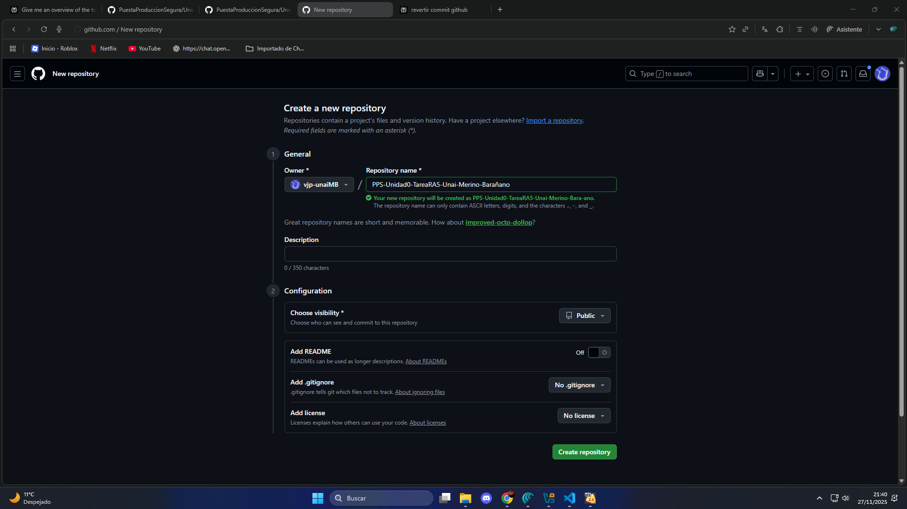
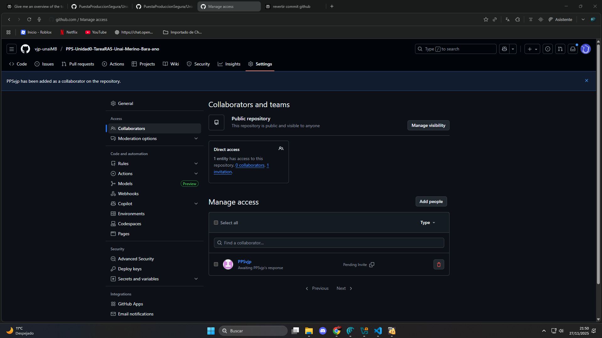
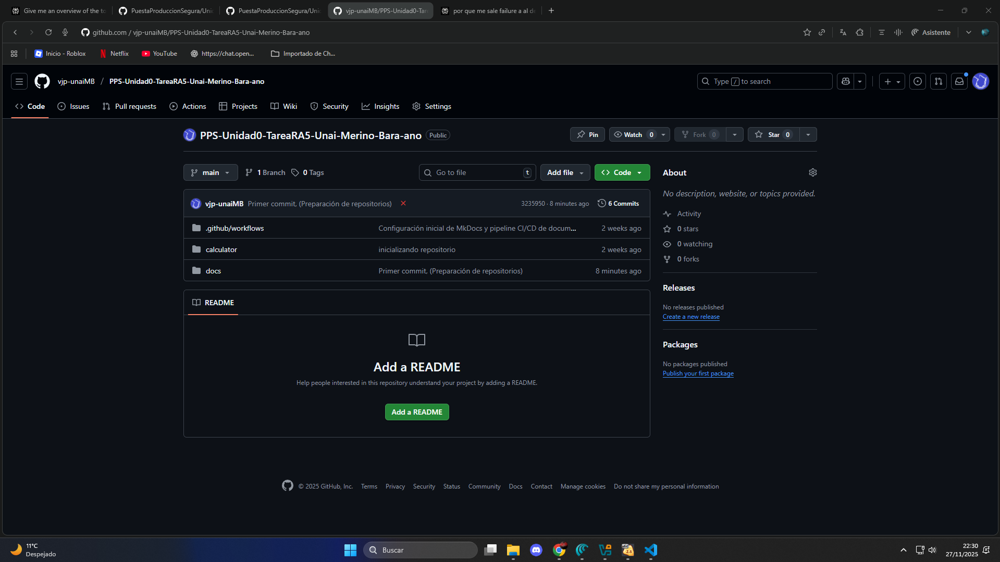

Git
(Creación de repositorios)
Para la creación de neustros repositorio GIT seguiremos los siguientes pasos:
Paso 0: Ubicación.
Para comenzar esta tarea es importante ubicarse y saber lo que haremos de aquí en adelante.
Estando dentro de la máquina kali, comenzaremos la actividad creando una nueva carpeta que llamaremos: PPS-Unidad0-TareaRA5-Unai-Merino-Barañano
Dentro de esta carpeta organizaremos nuestros archivos y alojaremos el repositorio de GIT local de este proyecto.
Paso 1: Reutilización de material.
Copiaremos en el nuevo directorio algunos archivos del repositorio local de la actividad anterior DevSecOps quedándonos con la carpeta /calculadora y junto a ella otra carpeta /docs vacía.

De momento la estructura de nuestro directorio corresponde a:
PPS-Unidad0-TareaRA5-Unai-Merino-Barañano
├── calculator/
│ ├── __init__.py
│ └── gui.py
└── docs/
Paso 2: Inicialización de repositorio local.
¡IMPORTANTE! Al tener ya listas nuestras variables de entorno de configuración de git no las crearemos ni haremos mención de ellas.
Abriremos un terminal en Root y accederemos a la carpeta, desde donde ejecutaremos los siguientes comandos para:
- Acceder a la carpeta
cd /home/PPSUnai/Desktop/PPS-Unidad0-TareaRA5-Unai-Merino-Barañano/ - Crear repo local
git config --global init.defaultBranch main - Inicializar Git
git init

Estructura del proyecto:
PPS-Unidad0-TareaRA5-Unai-Merino-Barañano
├── calculator/
│ ├── __init__.py
│ └── gui.py
├── docs/
└── .git
Paso 3: Creación y vinculación con Repositorio Remoto.
Como hemos empezado nuestro proyecto en un repositorio local, no disponemos de repositorio remoto, por lo que en este apartado lo crearemos en github para posteriormente vincularlo a nuestro repositorio local.
Inicio > Nuevo > NombreRepo > CrearRepo

Añadimos colaboradores: Tras crearlo > AddCollaborators > AddPeople

Vinculamos los repositorios remoto y local mediante una *KEY SSH, para ello apuntaremos hacia nuestro Repositorio Remoto con la siguiente sentencia:
git remote set-url origin git@github.com:vjp-unaiMB/PPS-Unidad0-TareaRA5-Unai-Merino-Bara-ano.git

Paso 4: Primer Commit & Push al Repositorio Remoto.
Crearemos un primer commit agregando a nuestro directorio una primera versión de la carpeta docs imcompleta pero que irá completandose a medida de que se vaya construyendo cada apartado restante de esta actividad.
- Añadir cambios al estado del directorio.
git add . - Creamos el commit con los cambios agregados
git commit -m " Primer commit, (Preparación de repositorios)" - Subimos los cambios a nuestro repositorio Remoto Rama Main
git push origin main

RESULTADO FINAL:
Repositorio Remoto:

Estructura provisional:
PPS-Unidad0-TareaRA5-Unai-Merino-Barañano/
├── calculator
│ ├── __init__.py
│ └── gui.py
└── docs
├── Capturas
│ ├── cap1.png
│ └── git-caps
│ ├── cap1.png
│ ├── cap2.png
│ ├── cap3.png
│ ├── cap4.png
│ ├── cap5.png
│ ├── cap6.png
│ └── cap7.png
├── conclusiones.md
├── docker.md
├── git.md
├── gitActions.md
├── gitPages.md
└── index.md